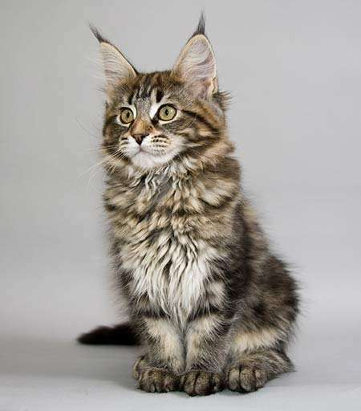

bbb - bom bonitinho e baratamente caro
Maine Coon: um gato de pelo longo, corpo grande e cauda espessa. É uma das maiores raças de gatos domésticos, podendo pesar até 10 kg. É inteligente, brincalhão e sociável, adaptando-se bem a diferentes ambientes.